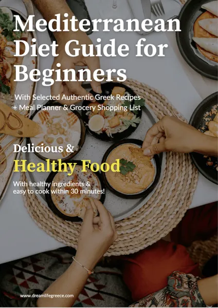

Mediterranean Diet for Beginners - 7 Day Meal Plan
Product profile · Marketplace data 2026-10-14 · Sales-page research 2026-10-14 · Categories: Health & Fitness, Food & Drink
- Mediterranean Diet for Beginners - 7 Day Meal Plan is a e-books in Health & Fitness and Food & Drink sold through the Digistore24 marketplace by vendor NickiWieland, listed since 2026-08-12.
- List price $30.21 (single payment) — checkout, delivery and refunds are handled by Digistore24 itself, not the vendor.
- Buyer protection: the sales page advertises a money-back guarantee — confirm the exact window at checkout.
Interested in Mediterranean Diet for Beginners - 7 Day Meal Plan? The current price, bonuses and guarantee terms live on the vendor's official page:
Check the official sales page
Affiliate link — we may earn a commission at no extra cost to you.

Marketplace record
| Product type | E-books |
|---|---|
| Price | $30.21 (Single payment) |
| Refund window | Per the vendor's sales page — check the official page before buying |
| Vendor | NickiWieland (listed since 2026-08-12) |
Vendor's marketplace description
Mediterranean Diet Guide for Beginners + 7-Day Meal Plan Looking for an evergreen health and wellness offer with strong consumer demand? The Mediterranean Diet Guide for Beginners is a beautifully designed, comprehensive 106-page digital guide for health-conscious customers who want to enjoy sustainable, balanced and stress-free healthy eating. WHY PROMOTE THIS OFFER? Massive and Evergreen Market The Mediterranean Diet consistently ranks among the most popular and highly recommended diets worldwide. Interest remains strong throughout the year. High Demand Across Multiple Channels This offer is ideal for audiences on Pinterest, Facebook, Instagram, TikTok, health and wellness blogs, and email lists. Optimized Sales Funnel The professional sales page is designed to convert interested visitors into customers. Attractive Affiliate Commissions Earn commissions for every successful digital product sale. All sales and commissions are tracked through Digistore24. IDEAL TARGET AUDIENCE This offer is suitable for women and men aged 30 to 65 and older who are interested in: Healthy and balanced eating Sustainable weight management Mediterranean recipes Simple meal preparation Heart-conscious nutrition Healthy aging and longevity Building healthier everyday habits RECOMMENDED TRAFFIC SOURCES Pinterest Promote the offer through Mediterranean meal plans, healthy recipes, shopping lists and informative pins. Instagram and TikTok Create content about healthy eating, Mediterranean recipes, meal preparation, fitness and sustainable lifestyle habits. Email Marketing Ideal for health, wellness, nutrition, weight management and lifestyle newsletters. Facebook, Google Ads and Blogs Reach potential customers through targeted advertising and SEO content about Mediterranean eating, beginner diet guides, healthy recipes and meal plans. WHAT THE CUSTOMER RECEIVES A beautifully designed 106-page digital guide A step-by-step introduction to the Mediterranean Diet The Mediterranean Plate Method for simple portion planning Practical habits for sustainable healthy eating Helpful shopping lists for everyday use Meal preparation guidance A complete 7-day Mediterranean meal plan Quick, simple and delicious recipes Get your affiliate link today and start monetizing your health and wellness audience with an evergreen digital offer.
From the vendor's sales page
Page title: 7 Day Mediterranean Diet Guide - For Beginners - Digistore24
Opening copy
A practical 106-page digital guide for beginners who want simple Mediterranean-style meals without complicated diet rules.
Inside the guide: 40 Greek-inspired recipes Complete 7-day Mediterranean meal plan Breakfast, lunch, dinner & snack ideas Printable grocery shopping list Meal planner, habit tracker & progress tools Many recipes ready in around 30 minutes BONUS: Mediterranean Weekly Planner Pack Start your Mediterranean journey today and discover how enjoyable healthy eating can be.
Digital product: You will receive a downloadable PDF. No physical product will be shipped. Refund policy 60 days.
Prices mentioned on the page: $10 · $30.20
Guarantee language found: “60” — always confirm the current terms on the official page before relying on it.
CTA buttons: “Get Instant Access”
Research method: raw HTML fetch · 413 words on page · quality: rich · researched 2026-10-14. Full research file (MD) ↗
How products like this are delivered
General note about this product type (not vendor-specific instructions): E-books on Digistore24 are delivered as a digital download (usually PDF/EPUB): right after checkout you get a download link or member-area access, and can read on any device. For the exact usage of Mediterranean Diet for Beginners - 7 Day Meal Plan, the official sales page and included materials are the authoritative source.
What is Mediterranean Diet for Beginners - 7 Day Meal Plan?
Mediterranean Diet for Beginners - 7 Day Meal Plan is a e-books in the Health & Fitness category of the Digistore24 marketplace, published by vendor NickiWieland and on sale since 2026-08-12. The vendor describes it as follows: "Mediterranean Diet Guide for Beginners + 7-Day Meal Plan Looking for an evergreen health and wellness offer with strong consumer demand? The Mediterranean Diet Guide for Beginners is a beautifully designed, comprehensive 106-page digital guide for health-consc" (vendor's marketplace description, lightly truncated).
Mediterranean Diet for Beginners - 7 Day Meal Plan pricing: what you will pay
The marketplace lists Mediterranean Diet for Beginners - 7 Day Meal Plan at $30.21 (single payment). Digistore24 adds any tax your country requires at checkout, where you see the final amount before paying. The sales page itself mentions: $10, $30.20 (vendor claims — the checkout total is the binding one). There is no separate marketplace-side fee; vendors may offer their own upsells after checkout.
Mediterranean Diet for Beginners - 7 Day Meal Plan refund policy and money-back guarantee
The sales page advertises: "60" (vendor claim). Refunds for Digistore24 purchases are processed through the platform: request via the support link in your order email, within the vendor's guarantee window shown at checkout. Practical advice: decide inside the window — if the product underdelivers, refund it rather than letting it ride.
Details and mechanics: how Digistore24 refunds work.
Who is Mediterranean Diet for Beginners - 7 Day Meal Plan for?
Based on its Health & Fitness classification and single payment pricing, Mediterranean Diet for Beginners - 7 Day Meal Plan targets buyers looking for health & fitness solutions at a mid-range price point. The honest test is not the category but your own situation: will you realistically use it within the refund window? If yes, the price is an investment; if not, it is clutter — regardless of quality.
Is Mediterranean Diet for Beginners - 7 Day Meal Plan legit? What to verify before buying
We do not rate legitimacy — nobody can, without using the product. What you can verify, all on this page: the vendor's marketplace history (listed since 2026-08-12), the verbatim sales-page extracts below (labeled vendor claims — their marketing, not our endorsement), the guarantee terms at checkout, and the delivery method. Red flags to check on any offer: pressure countdowns paired with vague refund terms, testimonials without dates, and vendor sites that hide pricing until checkout.
How do you access Mediterranean Diet for Beginners - 7 Day Meal Plan after buying?
Checkout runs on Digistore24. After payment: E-books on Digistore24 are delivered as a digital download (usually PDF/EPUB): right after checkout you get a download link or member-area access, and can read on any device. Keep your order email — it is your key to the e-books, your refund requests and Digistore24 buyer support.
Mediterranean Diet for Beginners - 7 Day Meal Plan reviews: how to research it properly
Third-party "reviews" of marketplace products are mostly affiliate content — including pages like this one, which earns a commission on purchases. Treat every review (ours included) as a starting point, then verify against primary sources: the vendor's own sales page, the Digistore24 refund policy, and — for health & fitness — independent communities outside the affiliate ecosystem. On this page the sales-page extracts below are quoted verbatim, so you can judge the vendor's claims without clicking away.
How to buy Mediterranean Diet for Beginners - 7 Day Meal Plan safely
- Open the official sales page and read the full offer.
- Confirm the final price and the refund window on the Digistore24 checkout page — that page is binding, not any review.
- Pay inside the Digistore24 checkout (never by bank transfer or off-platform links).
- Save the order confirmation email; note the refund deadline in your calendar.
- Evaluate promptly. Digistore24 buyer support can help if the vendor is unresponsive.
Full research archive for this product (Markdown: complete marketplace record + verbatim sales-page extracts): Mediterranean Diet for Beginners - 7 Day Meal Plan — full data archive (Markdown file: 58296-mediterranean-diet-for-beginners-7-day-meal-plan.md).
- Listed price & billing — source: official Digistore24 marketplace API, snapshot 2026-10-14. The checkout page is always the binding source for the current price.
- Sales-page quotes & headline — source: https://www.digistore24.com/product/714245, fetched 2026-10-14 (method: raw HTML). Verify: open the official page.
- Guarantee / refund — set by the vendor; confirm on the sales page at purchase time.
- Not verified by us: product quality, outcomes, testimonials — no hands-on test has been performed for this listing.
Frequently asked questions about Mediterranean Diet for Beginners - 7 Day Meal Plan
Answers compiled from the marketplace snapshot (2026-10-14) and vendor sales-page research (2026-10-14); vendor claims are labeled inline.
What is Mediterranean Diet for Beginners - 7 Day Meal Plan?
Mediterranean Diet for Beginners - 7 Day Meal Plan is a e-books sold through the Digistore24 marketplace by vendor NickiWieland, listed since 2026-08-12. It is filed under Health & Fitness and Food & Drink. Digistore24 handles checkout, delivery and refunds for this product.
How much does Mediterranean Diet for Beginners - 7 Day Meal Plan cost?
The Digistore24 marketplace lists it at $30.21 (single payment). Prices are set by the vendor and can change — the marketplace record above shows the snapshot; the official sales page shows the current price.
Is there a money-back guarantee for Mediterranean Diet for Beginners - 7 Day Meal Plan?
The vendor's sales page advertises: “60”. The guarantee window is set by the vendor — confirm the current terms on the official page before buying. Digistore24 handles the refund process.
Is Mediterranean Diet for Beginners - 7 Day Meal Plan legit?
We don't rate legitimacy — we publish verifiable data instead: vendor NickiWieland (listed on Digistore24 since 2026-08-12), listed on the marketplace since 2026-08-12, with its complete sales-page research archived on this page (vendor claims labeled as such). Read our 6-point evaluation method and judge with the facts — or join the discussion about Mediterranean Diet for Beginners - 7 Day Meal Plan.
Where can I buy Mediterranean Diet for Beginners - 7 Day Meal Plan safely?
Only through the official sales page linked on this site (checkout and refunds run via Digistore24). Verify the price and guarantee there before ordering. That link is an affiliate link — buying through it supports this site at no extra cost to you.
How do I get Mediterranean Diet for Beginners - 7 Day Meal Plan after paying?
Checkout runs on Digistore24: after payment you receive your access or download by email and in your Digistore24 customer account. Delivery details for this product type: E-books on Digistore24 are delivered as a digital download (usually PDF/EPUB): right after checkout you get a download link or member-area access, and can read on any device. If anything fails, Digistore24 buyer support can recover your order.
All 50 buyer questions about Health & Fitness — the full category FAQ.
Discuss Mediterranean Diet for Beginners - 7 Day Meal Plan on Reddit
Community threads are where real buyers compare notes. We link to communities, not to specific posts — threads move, subreddits stay:
- r/Supplements — community discussions that often touch health & fitness.
- r/nutrition — community discussions that often touch health & fitness.
- Search Reddit for "Mediterranean Diet for Beginners - 7 Day Meal Plan" — real-time results, we don't control them.
- Top "review" mentions this year — sort by top, filter by recency yourself.
Related shopping on Amazon
Physical products and gear commonly bought alongside Mediterranean Diet for Beginners - 7 Day Meal Plan:
- Shop supplements on Amazon — top results, Amazon's ranking.
- Bestsellers in supplements — live Amazon list, we don't curate it.
Sponsored: as an Amazon Associate, DigistorePicks earns from qualifying purchases (tag adminstore05-20). Amazon sets its own prices and commissions (typically low single digits — far below Digistore24 vendors' 30–75%). We list Amazon as a convenience for physical goods; it is not an alternative to the digital product above.
Related offers in Health & Fitness

The Zōē Method is a premium 12-week personalized coaching program built around female cycle . Your audience gets personal ondoarding, real coach with 18+ years

Learn Vegan Living with Practical Video Courses Vegan Warrior PRO is a collection of practical videos, tutorials, and courses created for people interested in v

Quantum Heart is a physical, shippable aluminum pendant with three body-facing 650nm visible red-light LEDs and USB-C recharging. Customers can choose one penda

Advanced Features of Teslacare Terahertz Technology Teslacare Terahertz Devices use advanced technology to provide detailed targeting of the human body, which c
Mediterranean Diet for Beginners - 7 Day Meal Plan is also listed in
Food & Drink (54 products)
Similar price range in Health & Fitness
This will be Easiest Commission you have ever made on Digistore24. Get in touch with Benson at medibenson@gmail.com for TopTier Commissions (90% Comms Available

From a Digistore24 Platinum Vendor . Neuro Genius Brain Energizer is a proven brain enhancement offer we’ve personally tested with our own ad spend on Facebook

Insane CVR's and EPC's. Neuroscientist-endorsed. Click here to get your link and CPA PAYOUTS: Contact us at binauraltechnologies@gmail.com for Commissio

New high-converting BEAST of a VSL. The EPC's will make you smile. Contact us at binauraltechnologies@gmail.com for Commission Bumps and Other Resources. Fr
Related searches
Where to check it out
Read the vendor's full sales page (current price, guarantee terms and bonuses are listed there):
View official sales page
That link is an affiliate link — if you buy through it we earn a commission from the vendor at no extra cost to you.
Sources & further information
- Official sales page (current price, guarantee, bonuses): www.digistore24.com/product/714245 (affiliate link)
- Public Digistore24 product page: checkout-ds24.com/product/714245
- Full research file (Markdown, versioned): content/products/58296-mediterranean-diet-for-beginners-7-day-meal-plan.md
- Vendor's affiliate support page: drive.google.com/drive/folders/1Y1eiUw1KFJP63VJRP0CDRfMziEFr
- Marketplace category: Health & Fitness
How we evaluate products like Mediterranean Diet for Beginners - 7 Day Meal Plan
Six checks, all on official marketplace numbers — earnings/sale ÷ cancel-rate skepticism × funnel fit. Read the full evaluation method · our research standards & labeling.
Questions, or own experience with Mediterranean Diet for Beginners - 7 Day Meal Plan?
We publish hands-on reviews only after buying a product ourselves — but your experience helps other readers: start or join the discussion about Mediterranean Diet for Beginners - 7 Day Meal Plan on GitHub. Found a wrong number? Report a correction — every page shows its data dates, and corrections are applied to the whole site.